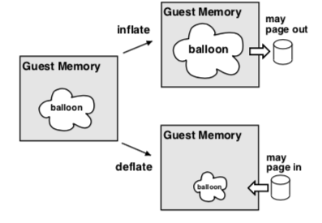
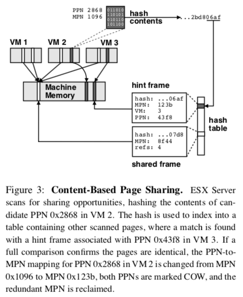

"Memory Resource Management in VMware ESX Server"
Problem
How to design a memory management system inside VMM to manage memory allocated to each guest OS (i.e., VM)? This is challenging as each guest OS also has its own resource manager and how to ensure performance isolation across all VMs.
Background
-
VMWare ESX Server runs on bare hardware (compared with VMM runs on a control OS like KVM); In "control OS" approach, here is the workflow of reading a file from an application in VM:
- an application read from a file (in VM)
- OS translates request into a read from block device (in VM)
- VMM translates that to a read from a file from host OS (in VMM)
- host OS translates request to a read from the machine's block device (in control OS)
-
Problems with previous memory management approach:
- VMM page replacement algorithm can pick a page important to guest OS. Causes performance anomalies.
- Double paging problem: If VMM pages out first, OS page out the same page will cause VMM fault in the same page from system paging device just to write out to the virtual paging device.
- Constraint: OS does not have a facility for changing amount of physical memory at runtime
System Design
-
terms:
- machine address: actual hardware memory
- "physical" address: software abstraction used to provide illusion of hardware memory to a virtual machine
- shadow page table: virtual-to-machine page mappings
- overcommitment: the total size configured for all running virtual machines exceeds the total amount of actual machine memory
Ballooning
Force guest OS to use its own page replacement algorithm

-
Download VMWare balloon module into guest OS as a pseudo-device driver or kernel service
- no external interface within the guest
- communicate with ESX server via a private channel
-
If ESX wants to reclaim memory, it instructs the driver to "inflate" by allocating pinned physical pages within VM and the memory pressure in guest OS force the guest OS to free memory
-
pinned physical pages used by balloon are told to ESX so that ESX can reclaim corresponding machine pages (i.e., pages allocated to balloon have their entry in the
pmapmarked, can be reclaimed by VMM) -
Defalte balloon to get OS to use more memory
-
If guest touches a balloon page, allocate a new page (machine page stealed from guest OS has to be returned)
-
Problems:
- Might not be able to reclaim memory fast enough
- Guest OS might refuse memory allocation request or limit the driver's ability to allocate memory
-
Can always resort to paging. Using randomize algorithm to avoid pathologically bad cases of paging out exactly what guest OS needs
Content-based Page Sharing
Able to share a page without modification to guest OS (compared to Disco's approach)

- Hash every page, store hashes in a hash table
- On collision, check if pages are identical. If they are, share copy-on-write
- With no collision, store hash as hint. On future collision check if hint is still valid (page content have not changed). If it is, share page.
Managing Memory with Taxes
The problem with proportional share allocators is that they let rich clients hoard resources. VMWare adds a tax to idle memory.
- The basic idea is to charge a client more for an idle page than for one it is actively using
- Tax rate specifies the maximum fraction of idle pages that may be reclaimed from a client
- Inflate cost of idle memory by tax rate
- Allow 25% idle memory to provide a buffer for a fast-growing working set increase
- Only need percentage of idle memory: measure by random sampling
Others
-
Actions to reclaim memory when percentage of free memory hits certain level:
- high (6%): no reclamation
- soft (4%): balloon, page when nencessary (share before swap)
- hard (2%): page
- low (1%): suspend VM
-
I/O Page remapping:
- overcommitment may lead to problem that guest OS may address machine page that doesn't exist (e.g., DMA on 32-bit access pages above 4GB boundary ("high" memory))
- fix: keep track of "hotness" of pages in high memory and when the I/O refernce count of such pages exceed certain threshold, they are remapped to low memory. May remap low memory pages to high memory pages to get more space for "hotness" remapping
Remarks
- Another well-written paper. Each technique is explained very clearly. Its writing style is quite unique as well: evaluation is divided and associated with relvant technique introduced. I personally like this style better as it gives me some break between each major point.